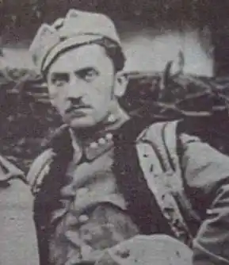
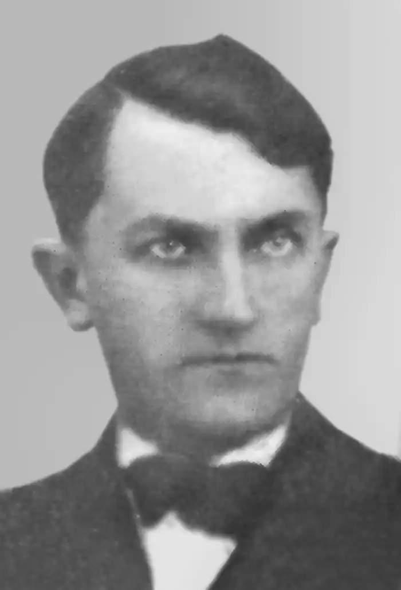

Всебічно талановитий, Левко Лепкий був композитором і художником, прозаїком і драматургом, журналістом і редактором, видавцем і громадським діячем, патріотом-державником і невтомним трудівником.
Народився Левко Лепкий 7 грудня 1888 року в селі Поручин Бережанського району в сім’ї священника Сильвестра Лепкого та Домни з Глібовицьких.
Після початкового домашнього навчання Левко Лепкий продовжив учитися в славнозвісній Бережанській гімназії, де став активним учасником таємного гуртка "Молода Україна". Закінчивши успішно навчання, 1909 року Левко, ідучи слідами свого діда та батька, записується на теологічний факультет Львівського університету, а згодом переходить на правничий. Проте невдовзі переїжджає до Кракова, де вивчає рисунок і малярство в місцевій академії мистецтв. З початком Першої світової війни, у серпні 1914 року, Левко Лепкий як доброволець австрійської армії стає одним з перших організаторів Легіону Українських січових стрільців. Стрілець Левко Лепкий очолив Пресову квартиру УСС. У боях за Україну, за її державність він став літописцем стрілецької слави, проявив себе як знаменитий організатор кінноти УСС та стрілецької музи. Творив Левко й вірші та прозові оповідання. Завдяки Левкові та його побратимам Романові Купчинському, Михайлові Гайворонському, Юрію Шкрумеляку, Антону Лотоцькому ми сьогодні маємо правдиву історію УСС – описи боїв, світлини, картини, романтичну стрілецьку поезію та нев’янучі і невмирущі стрілецькі пісні. Вони стали улюбленими військовими піснями не лише січових стрільців та австрійських вояків-українців, а й здобули популярність серед народних мас, а найбільше підчас польсько-української війни 1918 року. Шалену популярність мали ті пісні, до яких Левко написав і слова, і музику: "Ой видно село, широке село під горою…", "І снилося з ночі дівчині…", " Колись, дівчино мила", " Ішов відважний гайовий до лісу темного…". Широкому загалові України відома пісня "Чуєш, брате мій". Написана вона 1910 року в Кракові братом Богданом Лепким. Але до того часу, коли Левко "підібрав музику", минуло майже чотири роки. Видається, сам Господь сприяв тому, щоб старший брат написав для молодшого пісенний текст, а той створив до нього таку ж геніальну мелодію. У цьому вірші лише кілька строф, та яка гама переживань міститься у такому маленькому творі! Відліт журавлів на зимівлю в чужі краї є яскравим поетичним символом. Тяжка подорож лету над морем нагадує про поневіряння сотень тисяч західних українців, які вік тому змушені були залишити рідну землю в пошуках кращої долі за океаном. Відліт птахів осінньої пори може також сприйматися як прощання з теплою порою року, кращим періодом життя. Якби Богдан і Левко не написали нічого, крім цієї пісні, то цього вистачило б, щоб їхні імена були навічно вписані золотими літерами в історію української музичної культури. Пісня, в якій стільки невимовного болю, бездонного жалю,глибокого відчаю… Вона завжди була на вустах українців у хвилини жалоби і туги. Співали її над могилами полеглих як останнє прощання. Після війни Левко Лепкий повернувся до Львова, де брав активну участь у молодому літературно-мистецькому русі, зокрема, був членом літературного угрупування "Богема". Л.Лепкий був директором видавництва "Червона калина", співпрацював у музичному видавництві "Сурма", редагував сатиричний журнал "Будяк", а пізніше "Зиз" — єдиний сатирично-гумористичний журнал, що вдало і правдиво ілюстрував події тодішньої буденщини. Свої літературні твори він підписував власним іменем або псевдонімами чи криптонімами: Оровець, Льоньо, Швунг, Зизик. У 1937 році Львівське видавництво "Червона Калина" випустило "Великий співаник Червоної Калини", де знаходимо стрілецькі пісні Л.Лепкого в обробці композиторів А. Рудницького, В. Барвінського, З. Лиська, Н.Нижанківського та інших. У 1940 році українське видавництво у Кракові випустило "140 пісень з нотами" (упорядкував Л. Лепкий). Вони розділені тут на жанри: святочні, козацькі, стрілецькі, побутові, любовні, лемківські, коломийки, веснянки. На жаль, збірника не вдалося розшукати. У роки фашистської окупації Л. Лепкий працював в редакції газети "Краківські вісті". Створюючи мелодії і тексти пісень, Лепкий був наділений непересічним поетичним даром. У 1944 році Л. Лепкий з Кракова емігрує у США. Після років поневірянь активно включається в українське громадське життя діаспори, відновлює у 1952 році видавництво "Червона калина", друкує свої спогади, оповідання, вірші, та нові пісні. Літературна спадщина Левка Лепкого, зокрема твори стрілецького і міжвоєнного періодів, що були опубліковані раніше, а також взяті з рукописного архіву поета, зібрані у книзі "Лев Лепкий. Твори". У1963 році був прийнятий у члени Наукового товариства ім. Шевченка. У 1955 році заснував українську оселю "Черче" неподалік міста Трентона. Був одружений з дочкою золочівського адвоката Марією Драгомирецькою. Дітей у сім’ї не народилося. Помер 28 жовтня 1971 року в місті Трентон, недалеко від Нью-Йорка, у США. Уся його літературно-мистецька спадщина служить збереженню пам’яті про нашу героїчну історію. Вона тісно переплітається із долею автора та його життєвивими переконаннями. Його ім’я і пам'ять про нього залишиться в пісні та в поетичному слові, в історії українського січового стрілецтва.